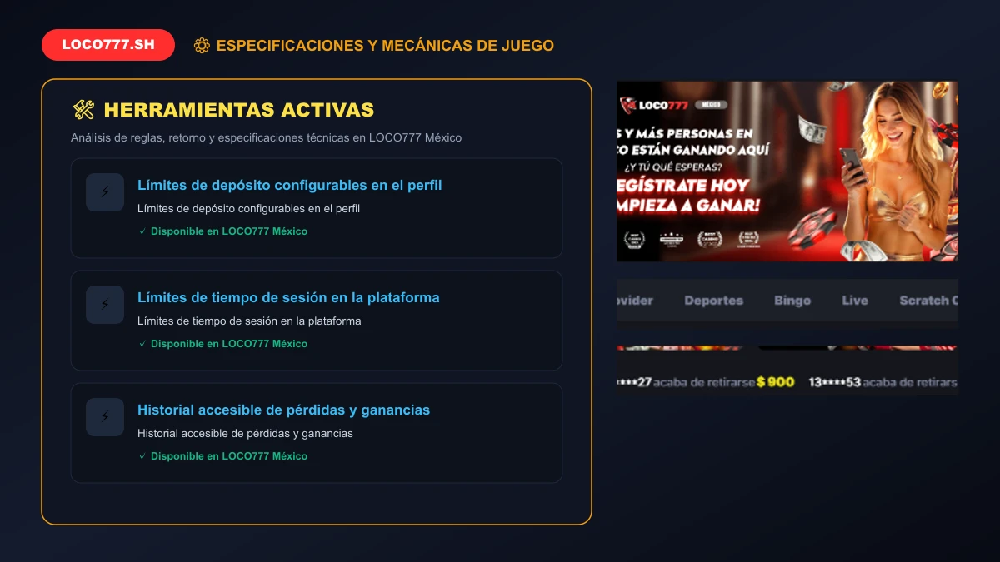
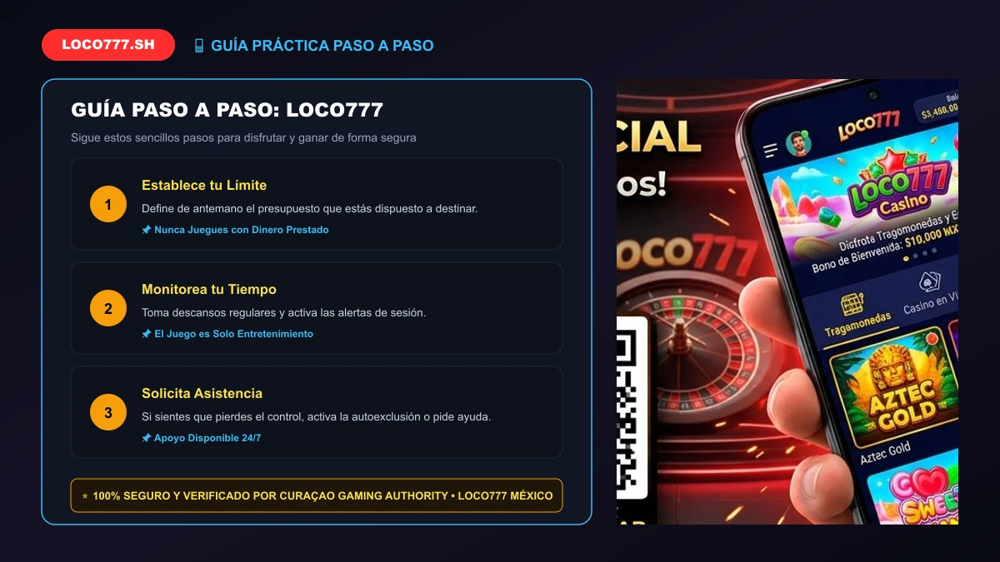

En LOCO777 consideramos que el juego de azar y las apuestas deportivas deben ser exclusivamente una fuente de entretenimiento emocionante, esparcimiento positivo y diversión controlada. La integridad física, mental y financiera de nuestros usuarios es la máxima prioridad de LOCO777 México, razón por la cual implementamos una política integral de Juego Responsable diseñada para prevenir conductas compulsivas y garantizar un entorno digital seguro.
Apoyamos activamente las iniciativas de juego seguro promovidas en la República Mexicana por la Secretaría de Gobernación (SEGOB) y la Curaçao Gaming Authority y la Curaçao Gaming Authority (Licencia N.º OGL/2024/1670/1153 a nombre de Pistis Trade N.V.), prohibiendo de forma tajante el acceso a menores de edad (+18) y facilitando herramientas efectivas de autocontrol a toda nuestra comunidad.
Apostar debe ser siempre una decisión voluntaria y consciente. En la plataforma recomendamos a todos nuestros miembros guiarse por estas reglas doradas:
Para ayudarte a mantener el control en todo momento, la plataforma pone a tu disposición en el panel de perfil herramientas configurables:

Si sientes que el juego está dejando de ser una diversión y comienza a afectar tu bienestar emocional, en LOCO777 tienes la potestad de solicitar la Autoexclusión. Este procedimiento suspende de forma irreversible tu cuenta durante el plazo que elijas (desde 6 meses hasta el cierre definitivo).
Durante el período de autoexclusión, no podrás iniciar sesión, realizar depósitos ni recibirás comunicaciones promocionales de nuestra parte. Todo saldo real remanente será liquidado a tu cuenta bancaria vía SPEI.
En LOCO777 la participación de menores de 18 años está rotundamente vetada. Realizamos verificaciones rigurosas de identidad (KYC) para corroborar la edad legal de cada cliente.
Recomendamos a padres de familia y tutores que compartan dispositivos móviles o computadoras en el hogar utilizar software de filtrado y control parental como Net Nanny, CyberPatrol o Family Zone para restringir el acceso a portales de apuestas.

Evalúa periódicamente tus hábitos de juego respondiendo con honestidad a estas preguntas:
Si respondiste afirmativamente a alguna de estas preguntas, te sugerimos activar de inmediato las herramientas de autocontrol y contactar con un especialista.
En México existen diversas instituciones públicas y organizaciones no gubernamentales dedicadas a brindar orientación gratuita, confidencial y profesional:
Ingresa a tu panel de usuario en LOCO777, dirígete a "Configuración de Cuenta > Juego Responsable" y selecciona la cantidad máxima que deseas autorizar por día o mes.
No. Por motivos de seguridad y apego estricto a las normas internacionales, las solicitudes de autoexclusión no pueden anularse bajo ninguna circunstancia antes de que expire el período fijado.
Te rogamos notificarlo inmediatamente a nuestro equipo de atención 24/7. Procederemos de inmediato al bloqueo permanente de la cuenta investigada.
Juego seguro, herramientas de autocontrol y entretenimiento legal para mayores de 18 años.
Sitio Oficial LOCO777LOCO777.sh Oficial • Plataforma de Casino y Apuestas en México 2026 • Pistis Trade N.V. Licencia Curaçao OGL/2024/1670/1153